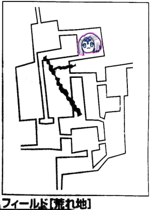
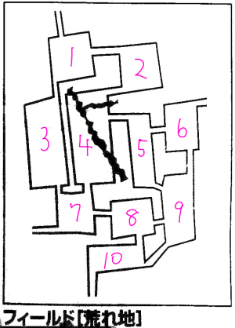

今まで何度も死地をくぐり抜けてきたエターナルパーティー…
前回はガチで全滅の危機に晒されてしまったところで時間切れとなりました。
そして！今！我らがエターナルキャンペーン初のオンラインセッションが開催される！
というのも、死亡したタッシュはやることなし、他のキャラも途中で倒れて何もすることがなくなる事態に陥りそうだったので、これはオンセでええやろ、と。
てことで今回戦闘だけになります。あと短いです。
短い割に3時間とかかかってるんですけどね！さすがオンセ！
 現在地はここです。
状況：
ストサー青：残り8点
ストサー白：残り13点
ストサー黒：残り25点
ダスキーA：残り21点
ダスキーB：残り27点
ブルーローズ：戦闘不能
ナナシ：生きてる
タッシュ：死亡
ピーター：死亡
みぞれ：次攻撃飛んできたら死ぬ
GM「3ターン目、プレイヤーのターンからでしたね。どうぞ」
ウンディーネ(ピーター)「アイスボルトを目の前のストサー青に」
GM「抵抗しました」
「うわー削りきれない、残り2」
「これブルーローズ起こしてダメージ稼いだ方がよくない？」
ナナシ「そうしよう、ブルーローズにアウェイクンポーション」
ブルーローズ「ダスキーAにキャッツアイマッスルベア入れてドラゴンテイルで攻撃！」
ダスキーA撃破！さすがパーティーのメイン火力です。
みぞれ「目の前のやつを処理できる自信がないので残飯処理します、後ろのストサー青を攻撃」
GM「当たった」
みぞれ「これで当たらなかったらどうしようかと…撃破！あとは任せた！」
GM「じゃこっちの番ね。ストサー黒がみぞれに攻撃」
みぞれ「はーい倒れました、生命抵抗判定は成功」
GM「ストサー白がブルーローズに攻撃」
ブルーローズ「避けられない！」
GM「ダメージは…1ゾロだけどダメージ7」
「えっなんで失敗じゃないの」
GM「こいつ打撃点1d6＋6なんで」
ブルーローズ「それでも残りHP1だったのでー7で倒れました。生命抵抗判定は…成功！」
GM「2撃目いきます」
「やばい死ぬ」
GM「…ファンブルしました」
ブルーローズ何気に強運！
ところでダスキーの行動書いてないんですけどこいつら何したんだっけ。
状況的にナナシを攻撃してたかな？
4ターン目。
ウンディーネ(ピーター)「ストサーにアイスボルト」
GM「クリティカル抵抗、この場合クリティカルはしても普通に半減です」
ウンディーネ「じゃ半減で7点どうぞ」
ナナシ「ガゼルフット入れてダスキーに攻撃！ヒット！11点！」
GM「ストサー黒がウンディーネを攻撃！」
1発目が命中、2発目は回避しました。
GM「ダスキーがファイアウェポンをストサー白にかけます。ちなみにナナシ今ストロングブラッドかかってないよね？」
ナナシ「ないです」
GM「ストサー白がナナシに攻撃」
ナナシ「回避！」
「なんか出目が高度な戦いになってる」
GM「2発目！」
ナナシ「それも回避！」
5ターン目。
ウンディーネ「アイスボルトをストサー黒に」
GM「抵抗しました」
ウンディーネ「半減で11点どうぞ」
ナナシ「メイスでダスキーを攻撃します。あっファンブル」
GM「ダスキーがファイアウェポンをストサー黒にかけます。あっファンブル」
「ファンブル多いな」
GM「ストサー黒がウンディーネに攻撃」
ウンディーネ「2回とも当たりました。残りHP30」
ジリープアー。
GM「ストサー白がナナシを攻撃」
ナナシ「2回とも回避！2回目はカウンター入りまーす」
とは言っても防護点が高いので4点しか通りません。
6ターン目。
ウンディーネ「ストサー黒にアイスボルト！」
GM「はい抵抗」
ウンディーネ「うわああ1点残ったーーー」
ナナシ「ダスキーを攻撃！」
GM「回避！」
GM「ダスキーがストサー白にプロテクション！成功！」
GM「ストサー黒がウンディーネに攻撃！」
ウンディーネ「2回とも当たりました、残りHP22」
「つよい」
GM「ストサー白がナナシに攻撃！」
ナナシ「ちょろいわーーーあ゛あ゛あ゛！？！？ファンブル」
GM「ファンブル表どうぞ」
ナナシ「ダメージ2倍…やべぇ」
GM「では2撃目…あ、ファンブル」
「酷い、なにこの当て逃げ」
7ターン目。
ウンディーネ「ストサー残HP1にアイスボルト…これファンブルする気がする…」
「伝説作るのやめて」
ウンディーネ「あっオーバーキル」
ようやく1匹撃破です！
ナナシ「ダスキーに攻撃！えっまたファンブル？どどんとふーーー？？？ナナシくんのことが嫌いなのかなーーー？？？」
本当に、普段の出目がなかったかのようなファンブル祭が繰り広げられています。これがなければもうちょっと楽だったかもしれない。いやGMも結構な頻度でファンブってたからどっちもどっちか。
GM「ダスキーが自分にファイアウェポン」
GM「ストサーがナナシに攻撃」
ナナシ「回避…まじかよまたファンブル」
GM「ファンブル表は防護点無効」
ナナシ「倒れました。生命抵抗判定は成功」
この時点生き残り：ストサー白、ダスキー、ウンディーネ
もうパーティー誰も残ってないｗ
8ターン目。
ウンディーネがアイスボルト数拡大を2匹に。どちらも抵抗成功。抵抗されまくってますね。
ダスキーがウンディーネに絡め取り、ウンディーネは回避。
ストサーの1撃目をウンディーネが回避、2撃目は当たり、残りHP8。
9ターン目。
ウンディーネ「アイスボルト2倍がけ！」
GM「ストサー抵抗、ダスキーは失敗」
ウンディーネ「2匹とも撃破！」
ここでダスキー抵抗してたら全滅だった件。
「い、生き残った…」
ウンディーネに荷物漁ってもらってアウェイクンポーションをみぞれに使ってもらいました。
起きたみぞれはブルーローズに応急手当。
起きたブルーローズはナナシにアウェイクン。
ブルーローズ「3人回復します。ナナシ成功、みぞれ成功、自分…わーいファンブル」
みぞれ「一応ヒーリングポーション飲んでおきます。崖崩れとか怖いんで」

村へ帰るために移動しますが、確かこの時点で#2にいた気がするんですがこの後街に戻るのに2回しか移動してる記述がないんですよね。
この事実に気づいたのが一度データ消えた後に復元してる時だったんですが…まあいいか。
ブルーローズ「イベント1です！これは何も起こらない！」
「時間経過したのでウンディーネ殺しますね」
「ころさないで」
ナナシ「探索します」
ブルーローズ「ビビッド歌います」
みぞれ「ヒーリングポーション使います」
誰に使ったか書いてないけどHP回復しきってないどっちかに使ったんだと思う。

みぞれ「ここさえ突破すれば…！イベント2！」
GM「吟遊詩人が現れました」
いつものやつ。
こうして我々はなんとか生還したのだった！
しかし借金を負ってしまった！
「ちなみにその全滅したという先駆者は生き返らなかったの？」
GM「一度は生き返ったんだけど、2回目の全滅で多額の借金を負って心が折れたらしい」
これがフラグにならないことを祈るばかりですね！